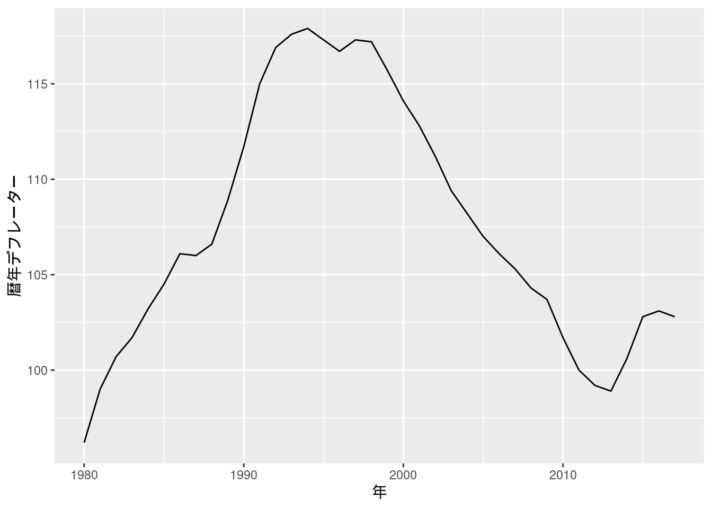
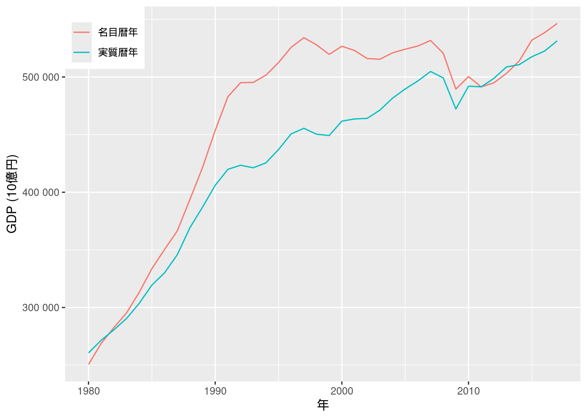
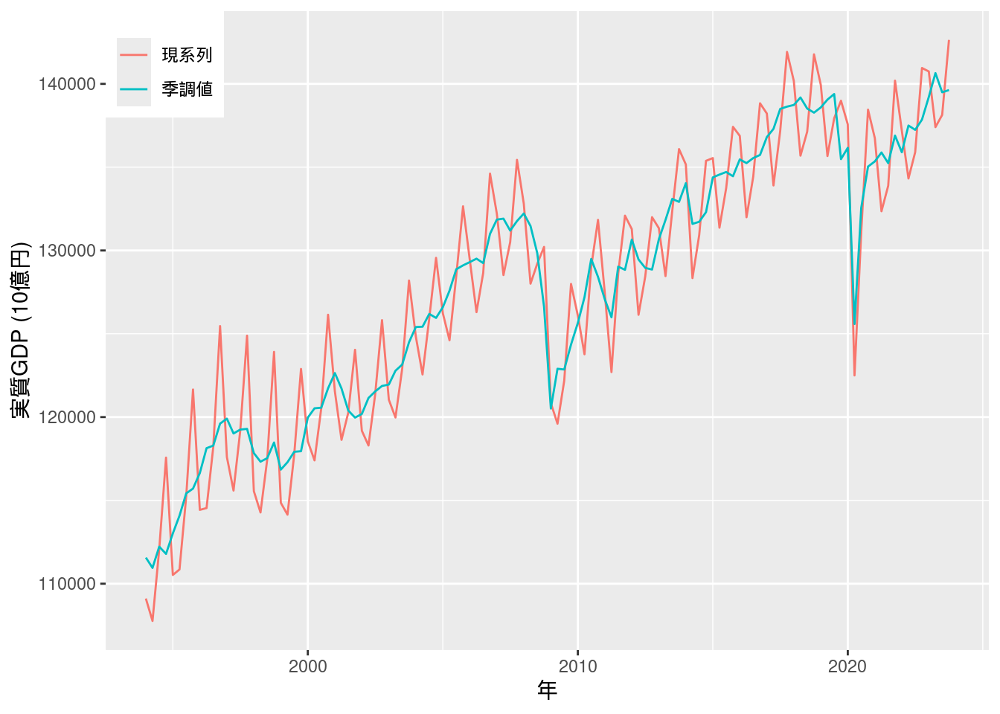
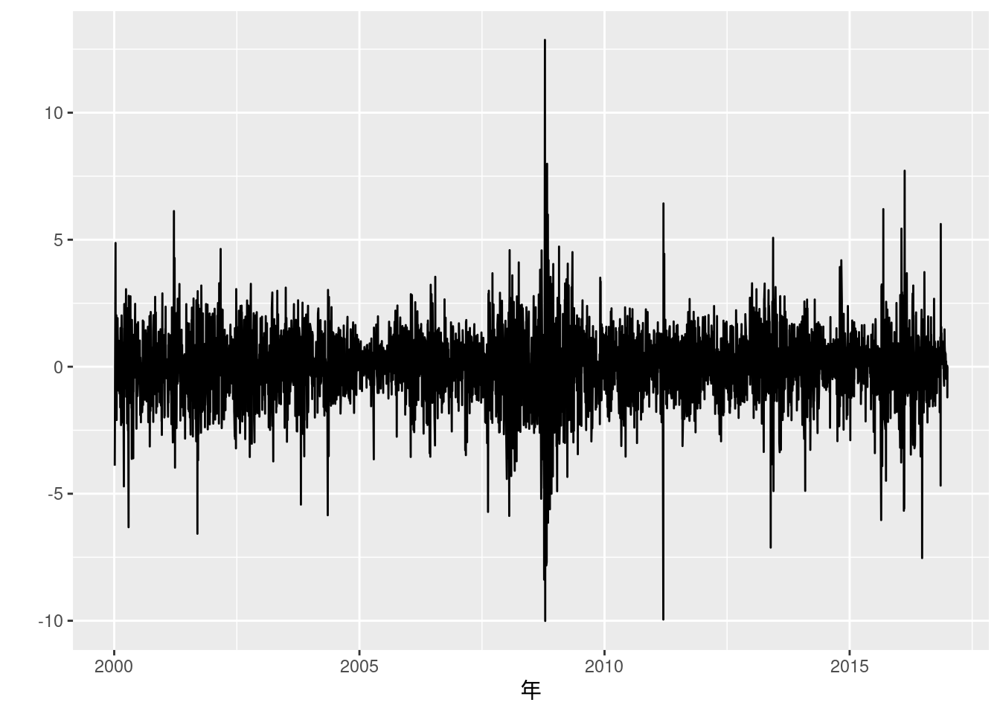

第10章 系列相関と時系列モデル
先に出版社サイトよりデータをダウンロードする.
# サポートファイルへのリンク
curl <- "https://www.yuhikaku.co.jp/static_files/05385_support10.zip"
# ダウンロード保存用フォルダが存在しない場合, 作成
if(!dir.exists("downloads")){
dir.create("downloads")
}
cdestfile <- "downloads/support10.zip"
download.file(curl, cdestfile)
# データ保存用フォルダが存在しない場合, 作成
if(!dir.exists("data")){
dir.create("data")
}
# WSL上のRで解凍すると文字化けするので、Linuxのコマンドを外部呼び出し
# Windowsの場合は別途コマンドを用いる.
if(.Platform$OS.type == "unix") {
system(sprintf('unzip -n -Ocp932 %s -d %s', "downloads/support10.zip", "./data"))
} else {
print("Windowsで解凍するコマンドを別途追加せよ.")
}必要なライブラリを読み込む.
library(tidyverse)
library(readxl)
library(patchwork)
##
## Attaching package: 'patchwork'
## The following object is masked from 'package:MASS':
##
## area
library(estatapi)
## このサービスは、政府統計総合窓口(e-Stat)のAPI機能を使用していますが、サービスの内容は国によって保証されたものではありません。
library(tidyquant)
## Registered S3 method overwritten by 'quantmod':
## method from
## as.zoo.data.frame zoo
## ── Attaching core tidyquant packages ───────────── tidyquant 1.0.10 ──
## ✔ PerformanceAnalytics 2.0.4 ✔ TTR 0.24.4
## ✔ quantmod 0.4.26 ✔ xts 0.14.1
## ── Conflicts ──────────────────────────────── tidyquant_conflicts() ──
## ✖ zoo::as.Date() masks base::as.Date()
## ✖ zoo::as.Date.numeric() masks base::as.Date.numeric()
## ✖ dplyr::filter() masks stats::filter()
## ✖ xts::first() masks dplyr::first()
## ✖ kableExtra::group_rows() masks dplyr::group_rows()
## ✖ dplyr::lag() masks stats::lag()
## ✖ xts::last() masks dplyr::last()
## ✖ PerformanceAnalytics::legend() masks graphics::legend()
## ✖ car::recode() masks dplyr::recode()
## ✖ MASS::select() masks dplyr::select()
## ✖ car::some() masks purrr::some()
## ✖ quantmod::summary() masks base::summary()
## ℹ Use the conflicted package (<http://conflicted.r-lib.org/>) to force all conflicts to become errors
library(estimatr)
library(latex2exp)
library(kableExtra)
library(lmtest)
library(sandwich)
library(dynlm)
library(fGarch)
## NOTE: Packages 'fBasics', 'timeDate', and 'timeSeries' are no longer
## attached to the search() path when 'fGarch' is attached.
##
## If needed attach them yourself in your R script by e.g.,
## require("timeSeries")
##
## Attaching package: 'fGarch'
##
## The following objects are masked from 'package:PerformanceAnalytics':
##
## ES, VaR
##
## The following object is masked from 'package:TTR':
##
## volatility
library(momentfit)図10-2 GDPデフレーター
Fig_2_GDPdeflator_annual <- read_excel("./data/10_第10章/Fig_2_GDPdeflator_annual.xlsx")
Fig_2_GDPdeflator_annual %>%
ggplot(aes(x = ...1, y = 暦年デフレーター)) +
geom_line() +
labs(x = "年")
図10-3 名目系列と実質系列
図9-5で行ったように, 一旦データフレームをlong型に変換する. 軸の桁表示については(このブログ記事)[https://knknkn.hatenablog.com/entry/2020/04/11/160500]を参考にした.
Fig_1_nominalGDP_annual %>%
pivot_longer(cols = c("名目暦年", "実質暦年")) %>%
ggplot(aes(x = ...1, y = value, color = name)) +
geom_line() +
scale_color_hue(name = element_blank()) +
labs(x = "年", y = "GDP (10億円)") +
theme(legend.position = c(0, 1), legend.justification = c(0, 1)) + # 凡例を左上に表示
scale_y_continuous(labels = scales::label_number()) # y軸の数字をe+n表示にしない
## Warning: A numeric `legend.position` argument in `theme()` was deprecated in
## ggplot2 3.5.0.
## ℹ Please use the `legend.position.inside` argument of `theme()`
## instead.
## This warning is displayed once every 8 hours.
## Call `lifecycle::last_lifecycle_warnings()` to see where this warning
## was generated.
図10-4 原系列と対数系列
別途内閣府のサイトからデータをダウンロードする.
curl <- "https://www.esri.cao.go.jp/jp/sna/data/data_list/kakuhou/files/h10/tables/55fcm1r.xls"
cdestfile <- "downloads/55fcm1r.xls"
download.file(curl, cdestfile)ダウンロードしたxlsファイルをread_excel関数で読み込み, 必要な行列を抽出する.
また, 行列変換してから再度データフレームにし, 変数を整理する.
なお, 本文中にあるような左右で単位が異なる両軸プロットはggplot2では推奨されておらず, 非常に描画しづらい.
代わりにpatchworkパッケージを用いて2つのプロットを並べて表示する.
fig10_4_data <- read_excel("downloads/55fcm1r.xls", sheet = "実数")
fig10_4_data <- t(fig10_4_data[c(6, 35), -1]) %>%
data.frame() %>%
mutate(year = as.integer(X1)) %>%
mutate(国内総支出 = as.numeric(X2)) %>%
dplyr::select(year, 国内総支出)
p1 <- fig10_4_data %>%
ggplot(aes(x = year, y = 国内総支出)) +
geom_line() +
labs(x = "年", y = "国内総支出 (10億円)")
p2 <- fig10_4_data %>%
ggplot(aes(x = year, y = 国内総支出)) +
geom_line() +
labs(x = "年", y = "対数国内総支出 (10億円)") +
coord_trans(y = "log")
p1 + p2図10-5 GDPギャップ (年次データ)
別途内閣府のサイトからデータをダウンロードする. データが更新されるごとにファイルのリンクが変わるようなので, 下が404エラーとなるときは, 内閣府のページの「ＧＤＰギャップ、潜在成長率」という名前のExcelファイルをダウンロードすればよい.
curl <- "https://www5.cao.go.jp/keizai3/getsurei/2412rgap.xlsx"
cdestfile <- "downloads/2412gap.xlsx"
download.file(curl, cdestfile)ダウンロードしたExcelファイルを確認して, sheet, rows, colsを指定してデータを読み込む.
fig10_5_data <- read_excel("downloads/2412gap.xlsx", sheet = "暦年")
fig10_5_data[-(1:5), 1:2] %>%
rename(year = `2024年１－３月期四半期別ＧＤＰ速報（２次速報（改定値））`, GDP.Gap = 暦年) %>%
mutate(year = as.integer(year)) %>%
mutate(GDP.Gap = as.numeric(GDP.Gap)) %>%
ggplot(aes(x = year, y = GDP.Gap)) +
geom_line() +
labs(x = "年", y = element_blank())図10-6 実質GDP成長率
図10-1で用いたデータを再利用し, 定義通りに成長率と対数階差成長率を求める.
Fig_1_nominalGDP_annual <- read_excel("./data/10_第10章/Fig_1_nominalGDP_annual.xlsx")
Fig_1_nominalGDP_annual %>%
mutate(成長率 = 100 * (実質暦年 - lag(実質暦年))/lag(実質暦年)) %>%
mutate(対数階差成長率 = 100 * (log(実質暦年) - log(lag(実質暦年)))) %>%
pivot_longer(cols = c("成長率", "対数階差成長率")) %>%
mutate(name = factor(name, levels = c("成長率", "対数階差成長率"))) %>%
ggplot(aes(x = ...1, y = value, color = name, linetype = name)) +
geom_line() +
scale_linetype_manual(values = c("dotted", "solid")) +
labs(x = "年", y = element_blank())
## Warning: Removed 2 rows containing missing values or values outside the scale
## range (`geom_line()`).図10-7 実質GDP (公表季調値)
こちらもやはりデータがサポートファイルに含まれていない.
その代わりに, e-Statにあるデータを使うこととする.
事前にe-Statのウェブサイトに登録して, アプリケーションIDを取得し, e-stat_appId.txtに保存しておく.
e-Statから国内総生産の実質原系列と実質季節調整系列の2つをダウンロードする.
両者ともに年と四半期を示すtime_codeが用いられているので, これを使って2つを結合し, また表示の都合上日付形式に直す (関数convert_time_code).
また, 実質季節調整系列は4で割って年換算に直す.
# 実質原系列
real <- estat_getStatsData(appId = appId, statsDataId = "0003109766")
## Fetching record 1-3075... (total: 3075 records)
real <- real %>%
filter(国内総生産_実質原系列 == "国内総生産(支出側)")
# 実質季節調整系列
real_seasonal <- estat_getStatsData(appId = appId, statsDataId = "0003109750")
## Fetching record 1-3075... (total: 3075 records)
real_seasonal <- real_seasonal %>%
filter(国内総生産_実質季節調整系列 == "国内総生産(支出側)")
# ダウンロードしたデータの`time_code`列を`datetime`型に変換する. 便宜上各四半期初日の値を代入する.
convert_time_code <- function(x) {
year <- substr(x, 1, 4)
month_day <- case_when(
substr(x, 7, 10) == "0103" ~ "0101",
substr(x, 7, 10) == "0406" ~ "0401",
substr(x, 7, 10) == "0709" ~ "0701",
TRUE ~ "1001"
)
return(ymd(paste(year, month_day, sep = "")))
}
inner_join(real, real_seasonal, by = "time_code") %>%
mutate(date = convert_time_code(time_code)) %>%
mutate(value.y = value.y / 4) %>% # 季節調整系列を年換算
pivot_longer(cols = c("value.x", "value.y")) %>%
ggplot(aes(x = date, y = as.numeric(value), color = name)) +
geom_line() +
scale_color_hue(name = element_blank(), labels = c("現系列", "季調値")) +
labs(x = "年", y = "実質GDP (10億円)") +
theme(legend.position = c(0, 1), legend.justification = c(0, 1)) # 凡例を左上に表示
図10-8 季調済みGDPデフレーターのインフレ率
別途内閣府のサイトと, e-Statからデータをダウンロードする. 内閣府のサイトからは1980年Q1から1995年Q1のデータを, e-Statからは1994年Q1以降のデータを取得する.
# 内閣府のサイトから1980年以降のデータをダウンロード
curl <- "https://www.esri.cao.go.jp/jp/sna/data/data_list/h27_retroactive/tables/def-qk_2780.csv"
cdestfile <- "downloads/def-qk_2780.csv"
download.file(curl, cdestfile)# ダウンロードしたデータを読み込み
fig10_8_pre <- read.csv("downloads/def-qk_2780.csv", fileEncoding = "CP932")
fig10_8_pre <- fig10_8_pre[7:62, c(1, 2)] %>%
rename(`時間軸（四半期）` = 四半期デフレーター季節調整系列) %>%
rename(value = X) %>%
mutate(value = as.numeric(value))
# e-Statから1994年以降のデータをダウンロードして読み込み
fig10_8_after <- estat_getStatsData(appId = appId, statsDataId = "0003109787")
## Fetching record 1-2214... (total: 2214 records)
fig10_8_after <- fig10_8_after %>%
filter(`国内総生産_四半期デフレーター 季節調整系列` == "国内総生産(支出側)") %>%
dplyr::select(`時間軸（四半期）`, value)
# 対応する時間軸を作成
year <- seq(ymd(19800101), ymd(20240701), by = "quarter")
fig10_8_data <- bind_rows(fig10_8_pre, fig10_8_after) %>%
cbind(year) %>%
data.frame()
fig10_8_data <- fig10_8_data %>%
mutate(inflation = 400 * (value - lag(value))/lag(value))
fig10_8_data %>%
ggplot(aes(x = year, y = inflation)) +
geom_line() +
labs(x = "年", y = "インフレ率 (%)")
## Warning: Removed 1 row containing missing values or values outside the scale
## range (`geom_line()`).図10-9 消費者物価指数の (対数季節階差) インフレ率
本文中の図では1980年1月から始まっているが, ここではデータがある1971年1月から始める. 対数季節階差の値もエクセルファイルにあるが, 確認のためRで計算し直す.
Fig_9_CPEinflation_monthly <- read_excel("./data/10_第10章/Fig_9_CPEinflation_monthly.xlsx")
Fig_9_CPEinflation_monthly <- Fig_9_CPEinflation_monthly %>%
mutate(year = ym(`類・品目`)) %>%
mutate(CPI = as.numeric(生鮮食品を除く総合)) %>%
mutate(対数季節階差 = 100 * log(CPI/lag(CPI, n = 12)))
## Warning: There was 1 warning in `mutate()`.
## ℹ In argument: `year = ym(`類・品目`)`.
## Caused by warning:
## ! 5 failed to parse.
## Warning: There was 1 warning in `mutate()`.
## ℹ In argument: `CPI = as.numeric(生鮮食品を除く総合)`.
## Caused by warning:
## ! NAs introduced by coercion
Fig_9_CPEinflation_monthly %>%
filter(year >= ym(197101)) %>%
ggplot(aes(x = year, y = 対数季節階差)) +
geom_line() +
labs(x = "年", y = "インフレ率 (%)")
図10-10 完全失業率 (移動平均)
本文中の図では2000年から始まっているが, ここではデータがある1973年から始める.
移動平均は (エクセルファイルにも計算されているが) Rでggplotで描画するときに, tidyquant::geom_ma()を使うことができる.
Fig_10_unemploymentrate_monthly <- read_excel("./data/10_第10章/Fig_10_unemploymentrate_monthly.xlsx")
Fig_10_unemploymentrate_monthly <- Fig_10_unemploymentrate_monthly %>%
mutate(year = ym(...1)) %>%
mutate(完全失業率 = as.numeric(原系列))
Fig_10_unemploymentrate_monthly %>%
filter(year >= ym(197207)) %>%
ggplot(aes(x = year, y = 完全失業率)) +
geom_line(aes(color = "原系列")) +
labs(x = "年", y = "完全失業率 (%)") +
geom_ma(n = 12, aes(color = "移動平均")) +
scale_color_hue(name = element_blank()) +
labs(x = element_blank(), y = element_blank()) +
theme(legend.position = c(0, 1), legend.justification = c(0, 1)) # 凡例を左上に表示
## Warning: A numeric `legend.position` argument in `theme()` was deprecated in
## ggplot2 3.5.0.
## ℹ Please use the `legend.position.inside` argument of `theme()`
## instead.
## This warning is displayed once every 8 hours.
## Call `lifecycle::last_lifecycle_warnings()` to see where this warning
## was generated.図10-11 実験系列
Excelファイルにデータが収録されているが, ここではRで乱数を同様に生成して描画する.
# 再現性のために任意のシード値を設定
set.seed(634)
# 150個の正規分布乱数を生成 (系列相関なし)
fig10_11_a <- rnorm(150)
# 上で生成したデータをもとに正の系列相関を持つデータを生成
fig10_11_b <- fig10_11_a[1]
for(i in 2:150) {
fig10_11_b[i] <- fig10_11_b[i-1] + 0.5 * fig10_11_a[i]
}
data.frame(1:150, fig10_11_a, fig10_11_b) %>%
pivot_longer(cols = c("fig10_11_a", "fig10_11_b")) %>%
ggplot(aes(x = X1.150, y = value, color = name)) +
geom_line() +
scale_color_hue(name = element_blank(), labels = c("(a) 系列相関なし", "(b) 正の系列相関")) +
labs(x = element_blank(), y = element_blank()) +
theme(legend.position = c(0, 1), legend.justification = c(0, 1)) # 凡例を左上に表示図10-12 GDPギャップ (四半期データ)
Excelファイルには内閣府と日本銀行のデータが入っているが, 本文通り内閣府のデータを描画する.
Fig_12_GDPgap_quarterly <- read_excel("./data/10_第10章/Fig_12_GDPgap_quarterly.xlsx")
Fig_12_GDPgap_quarterly <- Fig_12_GDPgap_quarterly %>%
mutate(year = yq(...3)) %>%
mutate(GDP.Gap = as.numeric(内閣府))
Fig_12_GDPgap_quarterly %>%
ggplot(aes(x = year, y = GDP.Gap)) +
geom_line() +
labs(x = "年", y = "GDPギャップ")
(10.12) 式
data_exp10.12 <- inner_join(fig10_8_data, Fig_12_GDPgap_quarterly) %>%
dplyr::select(year, inflation, 内閣府) %>%
filter(ym(198001) <= year & year < ym(201701))
model10.12 <- lm_robust(inflation ~ 内閣府, data = data_exp10.12, se_type = "stata")
summary(model10.12)
##
## Call:
## lm_robust(formula = inflation ~ 内閣府, data = data_exp10.12,
## se_type = "stata")
##
## Standard error type: HC1
##
## Coefficients:
## Estimate Std. Error t value Pr(>|t|) CI Lower CI Upper DF
## (Intercept) 0.5742 0.16705 3.438 7.660e-04 0.2441 0.9044 145
## 内閣府 0.4153 0.09608 4.323 2.845e-05 0.2255 0.6052 145
##
## Multiple R-squared: 0.09996 , Adjusted R-squared: 0.09375
## F-statistic: 18.69 on 1 and 145 DF, p-value: 2.845e-05(10.13) 式
data_exp10.13 <- inner_join(Fig_9_CPEinflation_monthly, Fig_10_unemploymentrate_monthly, by = "year") %>%
filter(year >= ym(198001))
lm_robust(対数季節階差 ~ 完全失業率, data = data_exp10.13, se_type = "stata") %>% summary()
##
## Call:
## lm_robust(formula = 対数季節階差 ~ 完全失業率, data = data_exp10.13,
## se_type = "stata")
##
## Standard error type: HC1
##
## Coefficients:
## Estimate Std. Error t value Pr(>|t|) CI Lower CI Upper DF
## (Intercept) 5.203 0.25805 20.16 2.124e-64 4.696 5.710 437
## 完全失業率 -1.195 0.06061 -19.72 2.305e-62 -1.314 -1.076 437
##
## Multiple R-squared: 0.5251 , Adjusted R-squared: 0.524
## F-statistic: 388.7 on 1 and 437 DF, p-value: < 2.2e-16図10-14 GDPギャップのコレログラム
標準のRではacf関数を使うと自己相関を求め, さらにコレログラムの描画もできる.
ggplot2で描画するには, acf(plot = FALSE)としてacf関数ではグラフを描画せず, 計算結果をそのままggplot2に渡せばよい.
fig10_14_data <- Fig_12_GDPgap_quarterly %>%
filter(ym(198001) < year & year < ym(201701)) %>%
dplyr::select(GDP.Gap) %>%
acf(plot = FALSE)
ci <- 0.95
N <- fig10_14_data$n.used
data.frame(acf = fig10_14_data$acf[-1], lag = fig10_14_data$lag[-1]) %>%
ggplot(aes(x = lag, y = acf)) +
geom_bar(stat = "identity", position = "identity") +
geom_hline(yintercept = qnorm((1+ci)/2)/sqrt(N), linetype = "dashed") +
geom_hline(yintercept = -qnorm((1+ci)/2)/sqrt(N), linetype = "dashed") +
labs(x = element_blank(), y = element_blank()) +
annotate("text", x = 20, y = qnorm((1+ci)/2)/sqrt(N) + 0.02, label = TeX("$2 \\times $SE")) +
annotate("text", x = 20, y = -qnorm((1+ci)/2)/sqrt(N) - 0.02, label = TeX("$-2 \\times $SE")) +
annotate("text", x = 5, y = 0.6, label = "自己相関")
## Warning in is.na(x): is.na() applied to non-(list or vector) of type
## 'expression'
## Warning in is.na(x): is.na() applied to non-(list or vector) of type
## 'expression'実証例10.1 GDPギャップの系列相関
リュン=ボックスの修正Q検定はBox.test(type = "Ljung-Box")で行うことができる.
Kableでは行ごとに桁丸め処理を行うことが難しいため, ここではKableに渡す表の値を先に文字列形式にした. 一方似たような表作成パッケージであるgtでは行ごとの処理が可能ではあるが, 数式の表示が難しいという難点がある. 同様の表を複数作成するため, 関数としておく.
data_ex10.1 <- Fig_12_GDPgap_quarterly %>%
filter(ym(198001) < year & year < ym(201701)) %>%
dplyr::select(GDP.Gap)
serial_cor_table <- function(data, digits = c(2, 1, 2, 2)) {
rho <- acf(data, plot = FALSE)$acf[-1]
ms = c(1, 2, 3, 4, 8, 12, 16, 20)
table <- data.frame()
round_format <- function(x, digit = 2) {
return(format(round(x, digit), nsmall = digit))
}
for(i in ms){
test = Box.test(data, lag = i, type = "Ljung-Box")
# kableでは行ごとに桁丸めができないためここで丸めて文字列として保存する
table <- rbind(table, data.frame(m = as.character(i),
rho_m = round_format(rho[i], digit = digits[1]),
Q_LB = round_format(test$statistic, digit = digits[2]),
臨界値 = round_format(qchisq(0.95, df = i), digit = digits[3]),
P値 = round_format(test$p.value, digit = digits[4])))
}
table <- t(table)
rownames(table) <- c("$m$", "$\\hat{\\rho}_m$", "$Q_{LB}$", "臨界値", "$P$値")
table %>%
kable(col.names = NULL, row.names = TRUE, escape = FALSE, align = "c")
}
serial_cor_table(data_ex10.1)| \(m\) | 1 | 2 | 3 | 4 | 8 | 12 | 16 | 20 |
| \(\hat{\rho}_m\) | 0.84 | 0.67 | 0.51 | 0.36 | 0.02 | -0.11 | -0.15 | -0.08 |
| \(Q_{LB}\) | 104.7 | 172.5 | 212.0 | 231.7 | 245.8 | 250.5 | 259.9 | 266.9 |
| 臨界値 | 3.84 | 5.99 | 7.81 | 9.49 | 15.51 | 21.03 | 26.30 | 31.41 |
| \(P\)値 | 0.00 | 0.00 | 0.00 | 0.00 | 0.00 | 0.00 | 0.00 | 0.00 |
実証例10.2 ホワイトノイズの系列相関
図10-11で生成したデータを用いる. 表のフォーマットは実証例10.1と同様であるため, 上で作成した関数にデータを渡すだけでよい.
| \(m\) | 1 | 2 | 3 | 4 | 8 | 12 | 16 | 20 |
| \(\hat{\rho}_m\) | -0.08 | -0.06 | 0.07 | -0.07 | 0.07 | -0.09 | -0.03 | 0.04 |
| \(Q_{LB}\) | 1.0 | 1.6 | 2.5 | 3.1 | 6.1 | 12.8 | 14.6 | 15.9 |
| 臨界値 | 3.84 | 5.99 | 7.81 | 9.49 | 15.51 | 21.03 | 26.30 | 31.41 |
| \(P\)値 | 0.31 | 0.44 | 0.48 | 0.53 | 0.63 | 0.38 | 0.56 | 0.72 |
図10-15 実験系列 (ホワイトノイズ) のコレログラム
fig10_15_data <- fig10_11_a %>%
acf(plot = FALSE)
ci <- 0.95
N <- fig10_15_data$n.used
data.frame(acf = fig10_15_data$acf[-1], lag = fig10_15_data$lag[-1]) %>%
ggplot(aes(x = lag, y = acf)) +
geom_bar(stat = "identity", position = "identity") +
geom_hline(yintercept = qnorm((1+ci)/2)/sqrt(N), linetype = "dashed") +
geom_hline(yintercept = -qnorm((1+ci)/2)/sqrt(N), linetype = "dashed") +
labs(x = element_blank(), y = element_blank()) +
annotate("text", x = 20, y = qnorm((1+ci)/2)/sqrt(N) + 0.02, label = TeX("$2 \\times $SE")) +
annotate("text", x = 20, y = -qnorm((1+ci)/2)/sqrt(N) - 0.02, label = TeX("$-2 \\times $SE")) +
annotate("text", x = 5, y = 0.1, label = "自己相関")
## Warning in is.na(x): is.na() applied to non-(list or vector) of type
## 'expression'
## Warning in is.na(x): is.na() applied to non-(list or vector) of type
## 'expression'実証例10.3 フィリップス曲線の誤差項の系列相関
(10.12)式のモデルの誤差項を調べる. インフレ率は内閣府から自身でダウンロードしたデータを用いているため値が異なる.
# インフレ率の1行目はNAになっているので取り除く
resid_10.3 <- data_exp10.12$inflation[-1] - model10.12$fitted.values
serial_cor_table(resid_10.3, digits = c(3, 2, 2, 2))| \(m\) | 1 | 2 | 3 | 4 | 8 | 12 | 16 | 20 |
| \(\hat{\rho}_m\) | 0.269 | 0.259 | 0.221 | 0.234 | 0.122 | 0.170 | 0.124 | 0.091 |
| \(Q_{LB}\) | 10.89 | 21.05 | 28.50 | 36.90 | 59.58 | 78.34 | 90.31 | 108.36 |
| 臨界値 | 3.84 | 5.99 | 7.81 | 9.49 | 15.51 | 21.03 | 26.30 | 31.41 |
| \(P\)値 | 0.00 | 0.00 | 0.00 | 0.00 | 0.00 | 0.00 | 0.00 | 0.00 |
実証例10.4 フィリップス曲線のHAC標準誤差
HAC標準誤差は(10.12) 式で求めたモデルを一旦lm()で計算し直して, それをlmtest::coeftest()に渡すことで求められる.
下の通り, この方法でもStataと同じホワイト標準誤差 (HC1) を求めることができる.
model10.12_lm <- lm(inflation ~ 内閣府, data = data_exp10.12)
# HAC標準誤差
coeftest(model10.12_lm, vcov = NeweyWest)
##
## t test of coefficients:
##
## Estimate Std. Error t value Pr(>|t|)
## (Intercept) 0.57425 0.21694 2.6470 0.0090177 **
## 内閣府 0.41535 0.11393 3.6457 0.0003709 ***
## ---
## Signif. codes: 0 '***' 0.001 '**' 0.01 '*' 0.05 '.' 0.1 ' ' 1
# ホワイト標準誤差
coeftest(model10.12_lm, vcov = vcovHC(model10.12_lm, type="HC1"))
##
## t test of coefficients:
##
## Estimate Std. Error t value Pr(>|t|)
## (Intercept) 0.574248 0.167046 3.4377 0.000766 ***
## 内閣府 0.415346 0.096077 4.3231 2.845e-05 ***
## ---
## Signif. codes: 0 '***' 0.001 '**' 0.01 '*' 0.05 '.' 0.1 ' ' 1実証例10.5 GDPギャップのARモデルのラグ選択
サポートサイトにあるEViewsの分析で用いているGDPギャップの出典が不明のため, 図10-12の作成に用いた内閣府のデータを用いる.
RでARモデルを推定するには, ar()を用いれば適切なラグ次数\(p\)が自動で選択される.
ここでは\(p \in \{0, 1, 2, 3, 4\}\)についてAR(\(p\))モデルを比較検討したいので, arima(order = c(p, 0, 0))を用いる.
また引数にinclude.mean = FALSEを指定することで定数項を含めないようにする.
p.500にあるAICとBICの定義は本文中で説明されている通り簡易なものであり, 下では手動で計算した.
ex10.5_data <- Fig_12_GDPgap_quarterly %>%
filter(year < ym(201701)) %>%
dplyr::select(内閣府)
ex10.5_models <- list("AR(0)" = arima(ex10.5_data, order = c(0, 0, 0), include.mean = FALSE, method = "ML"),
"AR(1)" = arima(ex10.5_data, order = c(1, 0, 0), include.mean = FALSE, method = "ML"),
"AR(2)" = arima(ex10.5_data, order = c(2, 0, 0), include.mean = FALSE, method = "ML"),
"AR(3)" = arima(ex10.5_data, order = c(3, 0, 0), include.mean = FALSE, method = "ML"),
"AR(4)" = arima(ex10.5_data, order = c(4, 0, 0), include.mean = FALSE, method = "ML"))
ex10.5_table1 <- data.frame()
round_format <- function(x, digits = 3) {
return(format(round(x, digits), nsmall = digits))
}
for(each in ex10.5_models) {
p <- each$arma[1]
T <- 148 - p
RSS_p <- sum(each$residuals^2)
ln_RSS_p_div_T <- log(RSS_p / T)
AIC_penalty <- (p + 1) * 2 / T
BIC_penalty <- (p + 1) * log(T) / T
ex10.5_table1 <- rbind(ex10.5_table1, data.frame(ps = as.character(p),
AIC = round_format(ln_RSS_p_div_T + AIC_penalty),
BIC = round_format(ln_RSS_p_div_T + BIC_penalty),
RSS_p = round_format(RSS_p, 1),
ln_RSS_p_div_T = round_format(ln_RSS_p_div_T),
AIC_penalty = round_format(AIC_penalty),
BIC_penalty = round_format(BIC_penalty)))
}
ex10.5_table1 <- t(ex10.5_table1)
rownames(ex10.5_table1) <- c("$p$", "AIC", "BIC", "RSS($p$)", "ln[RSS($p$)/$T$]", "AICの罰則項", "BICの罰則項")
ex10.5_table1 %>%
kable(col.names = NULL, row.names = TRUE, escape = FALSE, align = "c")| \(p\) | 0 | 1 | 2 | 3 | 4 |
| AIC | 1.130 | -0.224 | -0.208 | -0.191 | -0.173 |
| BIC | 1.150 | -0.183 | -0.147 | -0.109 | -0.070 |
| RSS(\(p\)) | 452.1 | 114.4 | 113.8 | 113.4 | 113.0 |
| ln[RSS(\(p\))/\(T\)] | 1.117 | -0.251 | -0.250 | -0.246 | -0.242 |
| AICの罰則項 | 0.014 | 0.027 | 0.041 | 0.055 | 0.069 |
| BICの罰則項 | 0.034 | 0.068 | 0.102 | 0.137 | 0.173 |
# 定数項ありのAR(1)モデルを再推定
arima(x = ex10.5_data, order = c(1, 0, 0), method = "ML")
##
## Call:
## arima(x = ex10.5_data, order = c(1, 0, 0), method = "ML")
##
## Coefficients:
## ar1 intercept
## 0.8291 -0.7196
## s.e. 0.0445 0.4065
##
## sigma^2 estimated as 0.7605: log likelihood = -190.33, aic = 386.66実証例10.6 ラグ付きインフレ率を含むフィリップス曲線の推定と誤差項の系列相関の検定
データは(10.12)式用に作成したものを再利用する.
ADLモデルはRではdynlm::dynlm()を用いることで推定できるが, このとき関数に渡すデータは先にtsオブジェクトにしておく.
自由度修正ホワイト標準誤差は実証例10.4のように, 推定したモデルをcoeftestに渡せばよい.
ここではボックス=ピアースによる近似を用いているが, これはBox.test(type = "Box-Pierce")と指定する.
また, ブルイッシュ=ゴッドフレイ検定はlmtest::bgtest()を用いて実行できる.
data_ex10.6 <- data_exp10.12 %>%
dplyr::select(inflation, 内閣府) %>%
ts(start = c(1980, 1),
end = c(2016, 4),
frequency = 4)
model_106 <- dynlm(inflation ~ L(inflation) + L(inflation, 2) +L(inflation, 3) + L(inflation, 4) + 内閣府, data = data_ex10.6)
summary(model_106)##
## Time series regression with "ts" data:
## Start = 1981(2), End = 2016(4)
##
## Call:
## dynlm(formula = inflation ~ L(inflation) + L(inflation, 2) +
## L(inflation, 3) + L(inflation, 4) + 内閣府, data = data_ex10.6)
##
## Residuals:
## Min 1Q Median 3Q Max
## -2.8113 -0.8859 -0.2014 0.6786 8.2331
##
## Coefficients:
## Estimate Std. Error t value Pr(>|t|)
## (Intercept) 0.20645 0.15348 1.345 0.18081
## L(inflation) 0.10466 0.08187 1.278 0.20331
## L(inflation, 2) 0.15685 0.08194 1.914 0.05767 .
## L(inflation, 3) 0.17570 0.07996 2.197 0.02968 *
## L(inflation, 4) 0.15139 0.07530 2.010 0.04636 *
## 内閣府 0.25363 0.08982 2.824 0.00546 **
## ---
## Signif. codes: 0 '***' 0.001 '**' 0.01 '*' 0.05 '.' 0.1 ' ' 1
##
## Residual standard error: 1.595 on 137 degrees of freedom
## (1 observation deleted due to missingness)
## Multiple R-squared: 0.3247, Adjusted R-squared: 0.3001
## F-statistic: 13.18 on 5 and 137 DF, p-value: 1.77e-10##
## t test of coefficients:
##
## Estimate Std. Error t value Pr(>|t|)
## (Intercept) 0.206453 0.137560 1.5008 0.135704
## L(inflation) 0.104657 0.076018 1.3767 0.170839
## L(inflation, 2) 0.156853 0.067382 2.3278 0.021388 *
## L(inflation, 3) 0.175700 0.075959 2.3131 0.022207 *
## L(inflation, 4) 0.151385 0.070362 2.1515 0.033188 *
## 内閣府 0.253626 0.086136 2.9445 0.003802 **
## ---
## Signif. codes: 0 '***' 0.001 '**' 0.01 '*' 0.05 '.' 0.1 ' ' 1
rho <- acf(model_106$residuals, plot = FALSE)$acf[-1]
ms = c(1, 2, 3, 4, 8, 12, 16, 20)
table <- data.frame()
round_format <- function(x, digit = 2) {
return(format(round(x, digit), nsmall = digit))
}
for(i in ms){
bp_test = Box.test(model_106$residuals, lag = i, type = "Box-Pierce")
bg_test = bgtest(model_106, order = i, type = "Chisq")
# kableでは行ごとに桁丸めができないためここで丸めて文字列として保存する
table <- rbind(table, data.frame(m = as.character(i),
rho_m = round_format(rho[i], digit = 2),
Q_LB = round_format(bp_test$statistic, digit = 2),
臨界値 = round_format(qchisq(0.95, df = i - 4), digit = 2),
P値 = round_format(bp_test$p.value, digit = 2),
TMRsq = round_format(bg_test$statistic, digit = 2),
臨界値 = round_format(qchisq(0.95, df = i), digit = 2),
P値 = round_format(bg_test$p.value, digit = 2)))
}## Warning in qchisq(0.95, df = i - 4): NaNs produced
## Warning in qchisq(0.95, df = i - 4): NaNs produced
## Warning in qchisq(0.95, df = i - 4): NaNs producedtable <- t(table)
table[c(4, 5), 1:4] <- "-"
rownames(table) <- c("$m$", "$\\hat{\\rho}_m$", "$Q_{LB}$", "臨界値", "$P$値", "$(T - m) \\times R^2$", "臨界値", "$P$値")
table %>%
kable(col.names = NULL, row.names = TRUE, escape = FALSE, align = "c")| \(m\) | 1 | 2 | 3 | 4 | 8 | 12 | 16 | 20 |
| \(\hat{\rho}_m\) | -0.07 | -0.08 | -0.06 | -0.03 | 0.01 | 0.06 | -0.01 | -0.05 |
| \(Q_{LB}\) | 0.68 | 1.52 | 1.97 | 2.06 | 3.88 | 5.65 | 7.26 | 10.55 |
| 臨界値 | - | - | - | - | 9.49 | 15.51 | 21.03 | 26.30 |
| \(P\)値 | - | - | - | - | 0.87 | 0.93 | 0.97 | 0.96 |
| \((T - m) \times R^2\) | 10.64 | 13.41 | 14.14 | 14.32 | 20.79 | 23.51 | 25.48 | 26.15 |
| 臨界値 | 3.84 | 5.99 | 7.81 | 9.49 | 15.51 | 21.03 | 26.30 | 31.41 |
| \(P\)値 | 0.00 | 0.00 | 0.00 | 0.01 | 0.01 | 0.02 | 0.06 | 0.16 |
図10-16 東証株価指数 (対数階差収益率)
fig10_16_data <- read_excel("./data/10_第10章/Fig_16_TOPIXreturn_thinner.xlsx")
fig10_16_data %>%
ggplot(aes(x = Date, y = return_topix)) +
geom_line() +
labs(x = "年", y = "")## Warning: Removed 1 row containing missing values or values outside the scale
## range (`geom_line()`).
実証例10.7 ARCHモデルとGARCHモデルの推定
ARCHモデルやGARCHモデルはfGarch::garchFit()を使うと容易に推定できる.
ARCH(1)モデルはGARCH(1, 0)モデルに等しいことからそれぞれformula引数を適当に設定する.
フィットしたgarchFitオブジェクトをsummary()関数にいれると, 下部でAICやBICといった情報基準も得ることができる.
本文中にある通り, AICとBICともにGARCH(1, 1)モデルのほうが値が小さく, こちらが選択されることが確認できた.
data_ex10.7 <- fig10_16_data %>%
mutate(res_sq = (return_topix - mean(return_topix, na.rm = TRUE))^2)
# ARCH効果の検定
serial_cor_table(data_ex10.7$res_sq[-1], digits = c(2, 1, 2, 2)) # 1行目はNAなので除く| \(m\) | 1 | 2 | 3 | 4 | 8 | 12 | 16 | 20 |
| \(\hat{\rho}_m\) | 0.28 | 0.34 | 0.33 | 0.20 | 0.18 | 0.23 | 0.12 | 0.08 |
| \(Q_{LB}\) | 337.7 | 809.1 | 1266.3 | 1428.2 | 2169.0 | 2887.6 | 3275.4 | 3451.8 |
| 臨界値 | 3.84 | 5.99 | 7.81 | 9.49 | 15.51 | 21.03 | 26.30 | 31.41 |
| \(P\)値 | 0.00 | 0.00 | 0.00 | 0.00 | 0.00 | 0.00 | 0.00 | 0.00 |
# ARCH(1)モデル
garchFit(~garch(1, 0), data = data_ex10.7$return_topix[-1], trace = FALSE) %>% summary()##
## Title:
## GARCH Modelling
##
## Call:
## garchFit(formula = ~garch(1, 0), data = data_ex10.7$return_topix[-1],
## trace = FALSE)
##
## Mean and Variance Equation:
## data ~ garch(1, 0)
## <environment: 0x5652e0e46278>
## [data = data_ex10.7$return_topix[-1]]
##
## Conditional Distribution:
## norm
##
## Coefficient(s):
## mu omega alpha1
## 0.011352 1.506653 0.237673
##
## Std. Errors:
## based on Hessian
##
## Error Analysis:
## Estimate Std. Error t value Pr(>|t|)
## mu 0.01135 0.02049 0.554 0.58
## omega 1.50665 0.04270 35.285 <2e-16 ***
## alpha1 0.23767 0.02357 10.084 <2e-16 ***
## ---
## Signif. codes: 0 '***' 0.001 '**' 0.01 '*' 0.05 '.' 0.1 ' ' 1
##
## Log Likelihood:
## -7205.325 normalized: -1.727067
##
## Description:
## Wed Feb 12 18:47:10 2025 by user:
##
##
## Standardised Residuals Tests:
## Statistic p-Value
## Jarque-Bera Test R Chi^2 2259.7339919 0.00000000
## Shapiro-Wilk Test R W 0.9694867 0.00000000
## Ljung-Box Test R Q(10) 17.2161210 0.06971648
## Ljung-Box Test R Q(15) 23.9398460 0.06612207
## Ljung-Box Test R Q(20) 29.2483546 0.08298312
## Ljung-Box Test R^2 Q(10) 681.2169339 0.00000000
## Ljung-Box Test R^2 Q(15) 839.5291185 0.00000000
## Ljung-Box Test R^2 Q(20) 930.5696500 0.00000000
## LM Arch Test R TR^2 433.8705114 0.00000000
##
## Information Criterion Statistics:
## AIC BIC SIC HQIC
## 3.455573 3.460129 3.455572 3.457185# GARCH(1, 1)モデル
garchFit(~garch(1, 1), data = data_ex10.7$return_topix[-1], trace = FALSE) %>% summary() # FIXME: muの値が結構違う?##
## Title:
## GARCH Modelling
##
## Call:
## garchFit(formula = ~garch(1, 1), data = data_ex10.7$return_topix[-1],
## trace = FALSE)
##
## Mean and Variance Equation:
## data ~ garch(1, 1)
## <environment: 0x5652e4401f68>
## [data = data_ex10.7$return_topix[-1]]
##
## Conditional Distribution:
## norm
##
## Coefficient(s):
## mu omega alpha1 beta1
## 0.029496 0.054941 0.126192 0.849551
##
## Std. Errors:
## based on Hessian
##
## Error Analysis:
## Estimate Std. Error t value Pr(>|t|)
## mu 0.02950 0.01748 1.688 0.0914 .
## omega 0.05494 0.01038 5.292 1.21e-07 ***
## alpha1 0.12619 0.01169 10.792 < 2e-16 ***
## beta1 0.84955 0.01310 64.859 < 2e-16 ***
## ---
## Signif. codes: 0 '***' 0.001 '**' 0.01 '*' 0.05 '.' 0.1 ' ' 1
##
## Log Likelihood:
## -6898.781 normalized: -1.653591
##
## Description:
## Wed Feb 12 18:47:11 2025 by user:
##
##
## Standardised Residuals Tests:
## Statistic p-Value
## Jarque-Bera Test R Chi^2 445.4347933 0.00000000
## Shapiro-Wilk Test R W 0.9873895 0.00000000
## Ljung-Box Test R Q(10) 20.4671734 0.02513111
## Ljung-Box Test R Q(15) 26.0904479 0.03708267
## Ljung-Box Test R Q(20) 29.6395101 0.07590927
## Ljung-Box Test R^2 Q(10) 9.4888600 0.48642017
## Ljung-Box Test R^2 Q(15) 12.3632777 0.65134964
## Ljung-Box Test R^2 Q(20) 17.4056542 0.62649743
## LM Arch Test R TR^2 11.4108285 0.49407682
##
## Information Criterion Statistics:
## AIC BIC SIC HQIC
## 3.309099 3.315174 3.309097 3.311248(10.69) 式
データは実証例10.6で用いたものをそのまま使う.
ただし, 上ではtsオブジェクトにしたのをdata.frameに戻す.
ここには1980年～2016年の四半期ごとのインフレ率とGDPギャップのデータが含まれている.
RでGMM推定をするには, momentfitパッケージを用いることができる.
モーメント関数を指定して推定することもできるが, ここでは簡単に通常通りformulaをmomentModel()で指定し, そこでできたオブジェクトをgmmFit()関数に渡すことで推定結果が得られる.
data_exp10.69 <- data.frame(data_ex10.6)
formula_exp10.69 <- momentModel(inflation ~ lag(inflation) + lag(inflation, 2) + lag(inflation, 3) + lag(inflation, 4) + 内閣府,
~ lag(inflation) + lag(inflation, 2) + lag(inflation, 3) + lag(inflation, 4) + lag(inflation, 5) + lag(inflation, 6) + lag(inflation, 7) + lag(inflation, 8) + lag(内閣府) + lag(内閣府, 2) + lag(内閣府, 3) + lag(内閣府, 4) + lag(内閣府, 5) + lag(内閣府, 6) + lag(内閣府, 7) + lag(内閣府, 8),
data = data_exp10.69,
vcov = "HAC")
gmmFit(formula_exp10.69) %>% summary()## Model based on moment conditions
## *********************************
## Moment type: linear
## Covariance matrix: HAC with Quadratic Spectral kernel and Andrews bandwidth
## Number of regressors: 6
## Number of moment conditions: 17
## Number of Endogenous Variables: 1
## Sample size: 139
##
## Estimation: Two-Step GMM
## Andrews Bandwidth: 1.142
## Sandwich vcov: FALSE
## coefficients:
## Estimate Std. Error t value Pr(>|t|)
## (Intercept) 0.284096 0.149427 1.9012 0.057270 .
## lag(inflation) 0.044989 0.052104 0.8634 0.387895
## lag(inflation, 2) 0.127823 0.040041 3.1923 0.001412 **
## lag(inflation, 3) 0.222487 0.056888 3.9109 9.194e-05 ***
## lag(inflation, 4) 0.144639 0.044854 3.2246 0.001261 **
## 内閣府 0.455493 0.097660 4.6640 3.101e-06 ***
## ---
## Signif. codes: 0 '***' 0.001 '**' 0.01 '*' 0.05 '.' 0.1 ' ' 1
##
## J-Test
## Statistics df pvalue
## Test E(g)=0: 6.2717 11 0.85464
##
##
## Instrument strength based on the F-Statistics of the first stage OLS
## 内閣府 : F( 12 , 122 ) = 40.30642 (P-Vavue = 0 )(10.70) 式
formula_exp10.70 <- momentModel(inflation ~ lead(inflation) + 内閣府,
~ lag(inflation) + lag(inflation, 2) + lag(inflation, 3) + lag(inflation, 4) + lag(inflation, 5) + lag(inflation, 6) + lag(inflation, 7) + lag(inflation, 8) + lag(内閣府) + lag(内閣府, 2) + lag(内閣府, 3) + lag(内閣府, 4) + lag(内閣府, 5) + lag(内閣府, 6) + lag(内閣府, 7) + lag(内閣府, 8),
data = data_exp10.69,
vcov = "HAC")
gmmFit(formula_exp10.70) %>% summary()## Model based on moment conditions
## *********************************
## Moment type: linear
## Covariance matrix: HAC with Quadratic Spectral kernel and Andrews bandwidth
## Number of regressors: 3
## Number of moment conditions: 17
## Number of Endogenous Variables: 2
## Sample size: 138
##
## Estimation: Two-Step GMM
## Andrews Bandwidth: 1.625
## Sandwich vcov: FALSE
## coefficients:
## Estimate Std. Error t value Pr(>|t|)
## (Intercept) 0.089382 0.136901 0.6529 0.5138
## lead(inflation) 0.904841 0.110671 8.1760 2.935e-16 ***
## 内閣府 0.125576 0.109177 1.1502 0.2501
## ---
## Signif. codes: 0 '***' 0.001 '**' 0.01 '*' 0.05 '.' 0.1 ' ' 1
##
## J-Test
## Statistics df pvalue
## Test E(g)=0: 18.267 14 0.1949
##
##
## Instrument strength based on the F-Statistics of the first stage OLS
## lead(inflation) : F( 16 , 121 ) = 12.09591 (P-Vavue = 0 )
## 内閣府 : F( 16 , 121 ) = 56.41916 (P-Vavue = 0 )練習問題 10-10 [実証]
1 - 3. 実証例10.7を参照せよ.
- 平均の代わりにAR(1)モデルを用いてGARCHモデルを推定するには,
arma(1, 0)をformula引数に追加する (正しく推定できているかあまり自信がないです…).
# AR(1)モデルを推定
practice10.10_ar1 <- arima(data_ex10.7$return_topix[-1], order = c(1, 0, 0), include.mean = FALSE, method = "ML")
# 誤差項の2乗値について, ARCH効果の検定
serial_cor_table(practice10.10_ar1$residuals^2, digits = c(2, 1, 2, 2)) # 1行目はNAなので除く| \(m\) | 1 | 2 | 3 | 4 | 8 | 12 | 16 | 20 |
| \(\hat{\rho}_m\) | 0.28 | 0.34 | 0.33 | 0.20 | 0.19 | 0.23 | 0.12 | 0.08 |
| \(Q_{LB}\) | 338.2 | 814.7 | 1271.7 | 1432.3 | 2172.2 | 2883.9 | 3273.9 | 3451.5 |
| 臨界値 | 3.84 | 5.99 | 7.81 | 9.49 | 15.51 | 21.03 | 26.30 | 31.41 |
| \(P\)値 | 0.00 | 0.00 | 0.00 | 0.00 | 0.00 | 0.00 | 0.00 | 0.00 |
# ARCH(1)モデル
garchFit(~arma(1, 0) + garch(1, 0), data = data_ex10.7$return_topix[-1], include.mean = FALSE, trace = FALSE) %>% summary()##
## Title:
## GARCH Modelling
##
## Call:
## garchFit(formula = ~arma(1, 0) + garch(1, 0), data = data_ex10.7$return_topix[-1],
## include.mean = FALSE, trace = FALSE)
##
## Mean and Variance Equation:
## data ~ arma(1, 0) + garch(1, 0)
## <environment: 0x5652efba3c58>
## [data = data_ex10.7$return_topix[-1]]
##
## Conditional Distribution:
## norm
##
## Coefficient(s):
## ar1 omega alpha1
## 0.065549 1.487455 0.249316
##
## Std. Errors:
## based on Hessian
##
## Error Analysis:
## Estimate Std. Error t value Pr(>|t|)
## ar1 0.06555 0.02221 2.952 0.00316 **
## omega 1.48745 0.04413 33.706 < 2e-16 ***
## alpha1 0.24932 0.02600 9.591 < 2e-16 ***
## ---
## Signif. codes: 0 '***' 0.001 '**' 0.01 '*' 0.05 '.' 0.1 ' ' 1
##
## Log Likelihood:
## -7199.166 normalized: -1.725591
##
## Description:
## Wed Feb 12 18:47:11 2025 by user:
##
##
## Standardised Residuals Tests:
## Statistic p-Value
## Jarque-Bera Test R Chi^2 2055.9401647 0.0000000
## Shapiro-Wilk Test R W 0.9701342 0.0000000
## Ljung-Box Test R Q(10) 14.9460857 0.1340399
## Ljung-Box Test R Q(15) 21.0672902 0.1346931
## Ljung-Box Test R Q(20) 25.9775431 0.1665548
## Ljung-Box Test R^2 Q(10) 661.4492228 0.0000000
## Ljung-Box Test R^2 Q(15) 830.3951664 0.0000000
## Ljung-Box Test R^2 Q(20) 920.6342120 0.0000000
## LM Arch Test R TR^2 427.1681942 0.0000000
##
## Information Criterion Statistics:
## AIC BIC SIC HQIC
## 3.452620 3.457177 3.452619 3.454232# GARCH(1, 1)モデル
garchFit(~arma(1, 0) + garch(1, 1), data = data_ex10.7$return_topix[-1], include.mean = FALSE, trace = FALSE) %>% summary()##
## Title:
## GARCH Modelling
##
## Call:
## garchFit(formula = ~arma(1, 0) + garch(1, 1), data = data_ex10.7$return_topix[-1],
## include.mean = FALSE, trace = FALSE)
##
## Mean and Variance Equation:
## data ~ arma(1, 0) + garch(1, 1)
## <environment: 0x5652eddb1840>
## [data = data_ex10.7$return_topix[-1]]
##
## Conditional Distribution:
## norm
##
## Coefficient(s):
## ar1 omega alpha1 beta1
## 0.043979 0.054850 0.124020 0.851386
##
## Std. Errors:
## based on Hessian
##
## Error Analysis:
## Estimate Std. Error t value Pr(>|t|)
## ar1 0.04398 0.01671 2.631 0.00851 **
## omega 0.05485 0.01033 5.309 1.1e-07 ***
## alpha1 0.12402 0.01151 10.779 < 2e-16 ***
## beta1 0.85139 0.01295 65.720 < 2e-16 ***
## ---
## Signif. codes: 0 '***' 0.001 '**' 0.01 '*' 0.05 '.' 0.1 ' ' 1
##
## Log Likelihood:
## -6896.307 normalized: -1.652998
##
## Description:
## Wed Feb 12 18:47:11 2025 by user:
##
##
## Standardised Residuals Tests:
## Statistic p-Value
## Jarque-Bera Test R Chi^2 447.6576934 0.0000000
## Shapiro-Wilk Test R W 0.9876457 0.0000000
## Ljung-Box Test R Q(10) 7.8991992 0.6386824
## Ljung-Box Test R Q(15) 13.2793885 0.5807278
## Ljung-Box Test R Q(20) 16.9210259 0.6580957
## Ljung-Box Test R^2 Q(10) 8.8533756 0.5460731
## Ljung-Box Test R^2 Q(15) 12.2545227 0.6596704
## Ljung-Box Test R^2 Q(20) 17.5635752 0.6161333
## LM Arch Test R TR^2 11.8579164 0.4571571
##
## Information Criterion Statistics:
## AIC BIC SIC HQIC
## 3.307913 3.313988 3.307911 3.310062やはりARCH(1)モデルではなく, GARCH(1, 1)モデルが選択された. また, AR(1)モデルを取り入れたこちらのほうが僅かに情報量基準の値が小さいことがわかる.